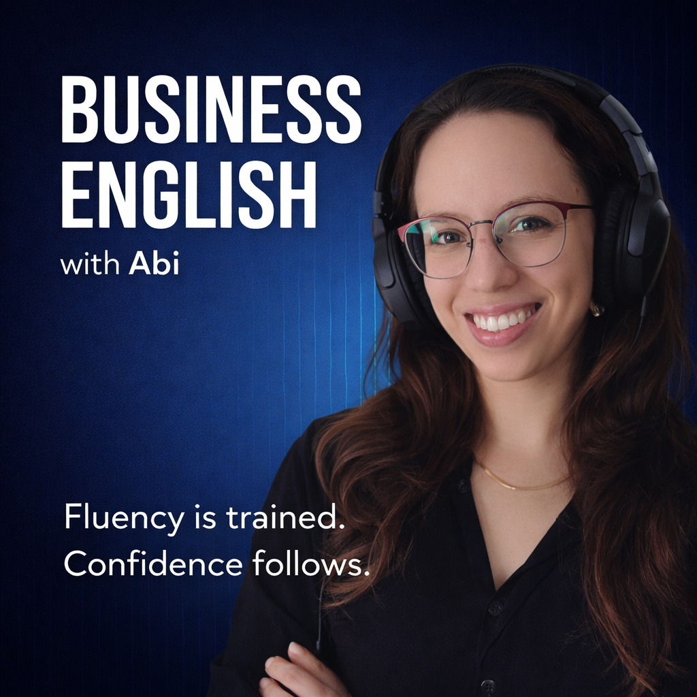

Entrenamiento en inglés profesional para setters y closers latinoamericanos que quieren performar con la misma seguridad en el mercado angloparlante que en su idioma nativo.
Una mini guía para dejar de disculparte y empezar a sonar como la profesional que ya sos — en inglés. Sin gramática, sin listas de verbos.
Lo quiero — escribime por Instagram
Soy Abi. Mentora en inglés profesional especializada en comunicación de alto impacto para sales professionals.
Trabajo con setters y closers de LATAM que ya tienen el resultado — y necesitan que su inglés lo refleje. No en un examen. En una discovery call, en una entrevista con un founder americano, en el DM que determina si seguís en el proceso.
Mi enfoque no es lingüístico solamente. Es de performance. Porque el inglés no es el objetivo. Es la herramienta.
El punto de entrada depende de dónde estás. El destino es el mismo: performar profesionalmente en inglés, en contextos que importan.
Inglés profesional sin filtro. Episodios cortos sobre comunicación, presencia y lo que nadie te dice sobre performar en inglés en el mundo real de las ventas.
La sesión de diagnóstico es el punto de partida. Evaluamos tu perfil, tu nivel y si soy la persona indicada para lo que necesitás. Si es así, definimos el plan. Si no, te lo digo con la misma claridad.